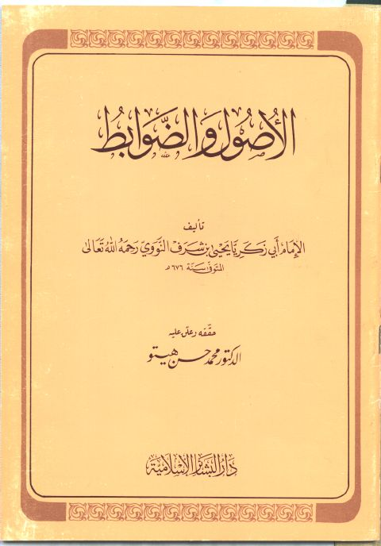
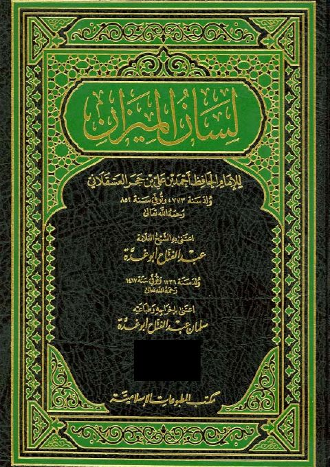
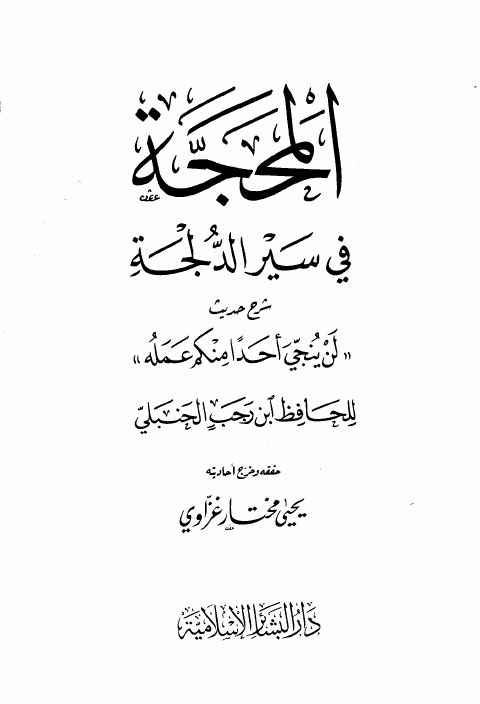
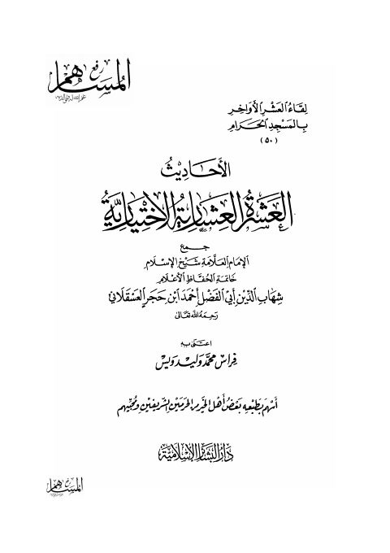
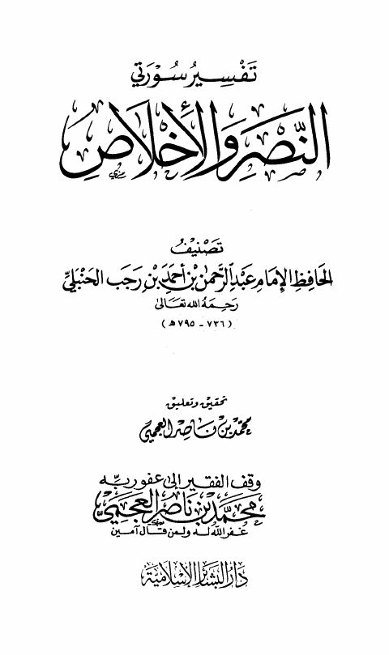
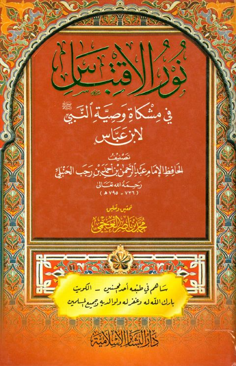
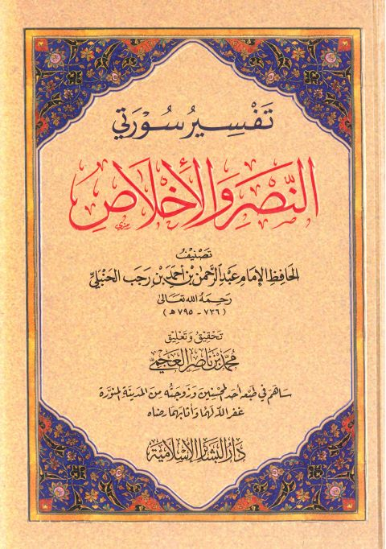

دار البشائر الإسلامية
Publisher
Resources

الأصول والضوابط الأصول والضوابط يحيى بن شرف النووي
لسان الميزان لسان الميزان أحمد بن محمد بن علي بن حجر العسقلاني تفسير سورة النصر تفسير سورة النصر عبد الرحمن بن أحمد بن رجب الحنبلي
المحجة في سير الدلجة شرح حديث "لن ينجي أحدًا منكم عمله" المحجة في سير الدلجة شرح حديث "لن ينجي أحدًا منكم عمله" عبد الرحمن البغدادي بن رجب الحنبلي
الأحاديث العشرة العشارية الاختيارية الأحاديث العشرة العشارية الاختيارية أحمد بن علي بن حجر العسقلاني تعجيل المنفعة بزوائد الأئمة الأربعة- ط. البشائر
تعجيل المنفعة بزوائد الأئمة الأربعة- ط. البشائر
أحمد بن علي بن حجر العسقلاني
تعجيل المنفعة بزوائد الأئمة الأربعة- ط. البشائر
تعجيل المنفعة بزوائد الأئمة الأربعة- ط. البشائر
أحمد بن علي بن حجر العسقلاني

تفسير سورتي النصر والإخلاص تفسير سورتي النصر والإخلاص عبد الرحمن بن أحمد بن رجب الحنبلي
نور الاقتباس في مشكاة وصية النبي ﷺ لابن عباس نور الاقتباس في مشكاة وصية النبي ﷺ لابن عباس عبد الرحمن بن أحمد بن رجب السلامي أبو الفرج
تفسير سورتي النصر والإخلاص- ط أخرى تفسير سورتي النصر والإخلاص- ط أخرى عبد الرحمن بن أحمد بن رجب الحنبلي